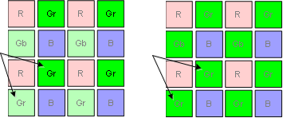
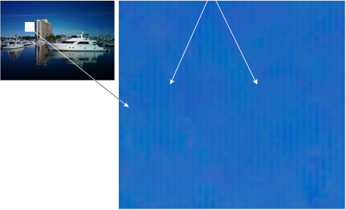
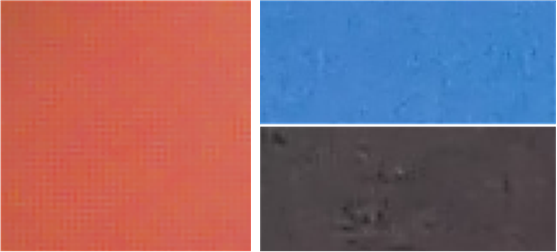
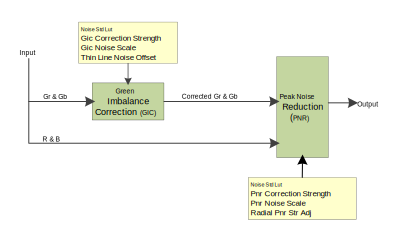

Some Bayer sensors may have a strong imbalance between the Gb and Gr channels.
The artifacts caused by this imbalance may not be fully corrected by the ABF noise
reduction block in the Bayer domain. Green imbalance correction (GIC) removes the
banding artifacts caused by the different sensitivities between Gr and Gb channels.
Figure : (L) Sensor showing gr/gb mismatch due to different channel sensitivity creating a
gr/gb imbalance artifact. (R) Sensor without gr/gb imbalance, channels have same
gr/gb sensitivity.

Figure : (R) Enlarged sky insert from left image shows vertical banding caused by an
imbalance between the gr and gb channels in the Bayer domain.

Figure : (L) Global green imbalance pattern. Global grid patterns, uniform throughout the
image. (R) Local green imbalace artifacts. Local cross hatch artifacts that
typically show up in uniform areas; very common in noisy sensors.

The Qualcomm Spectra 2xx GIC module combines green imbalance correction with
peak noise reduction (PNR). The PNR submodule is used to remove peak noise in flat
regions. Imbalance between the Gb and Gr channels is corrected first. Corrected Gb and
Gr channels then work with R and B channels to reduce peak noise. The following figure
shows the GIC and PNR flow, and the parameters used to correct green imbalance.
